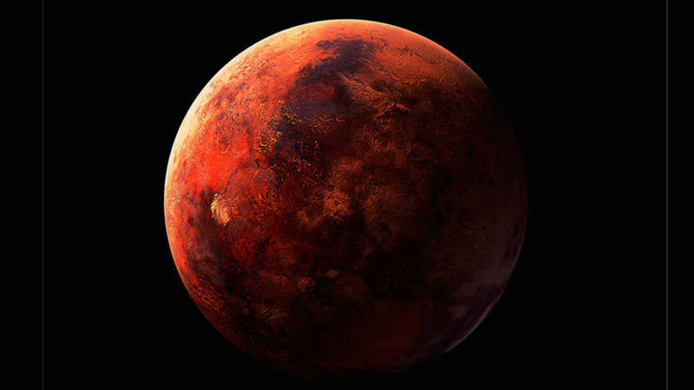
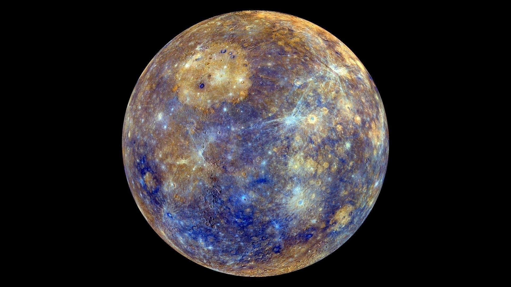
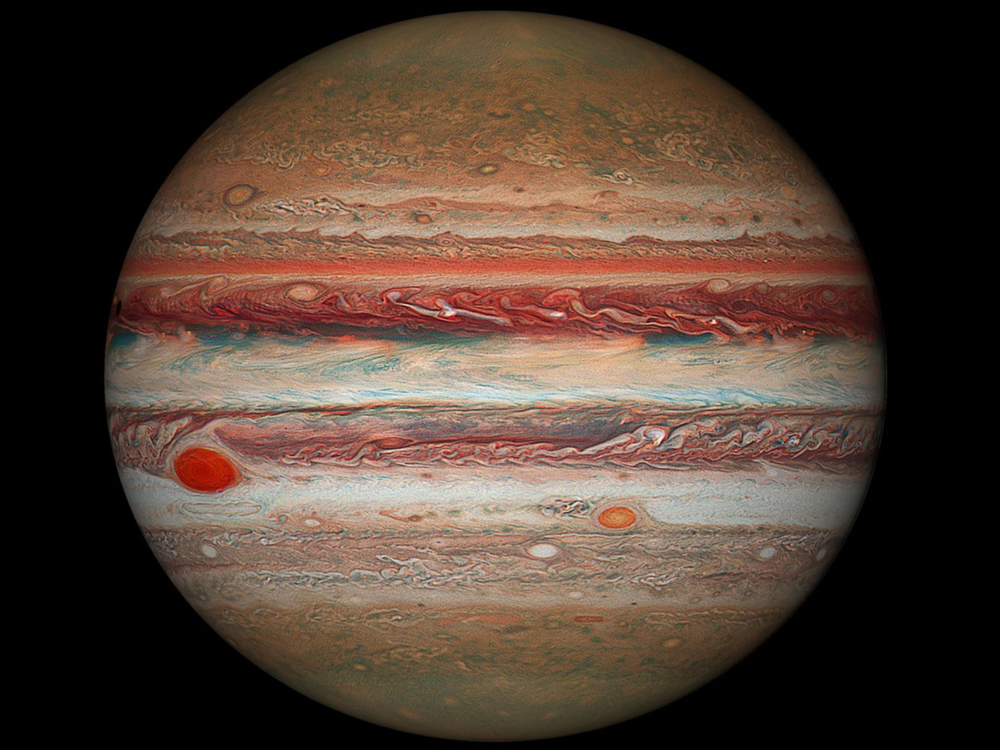
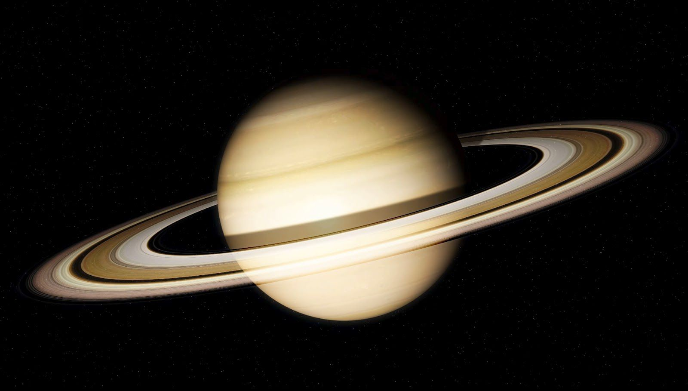
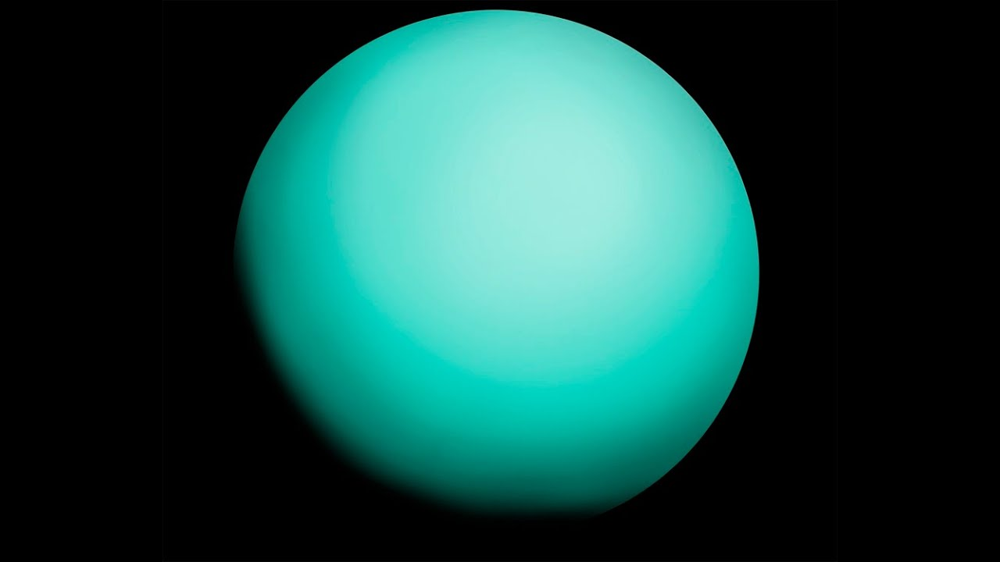

| Nombre | Imagen | Kilometros hasta la Tierra |
|---|---|---|
| Tierra | |
0 kilómetros |
| Venus | 40 millones de kilómetros | |
| Marte |  | 58 millones de kilómetros |
| Mercurio |  | 222 millones de kilómetros |
| Júpiter |  | 594 millones de kilómetros |
| Saturno |  | 1200 millones de kilómetros |
| Urano |  | 2601 millones de kilómetros |
| Neptuno | |
4306 millones de kilómetros |